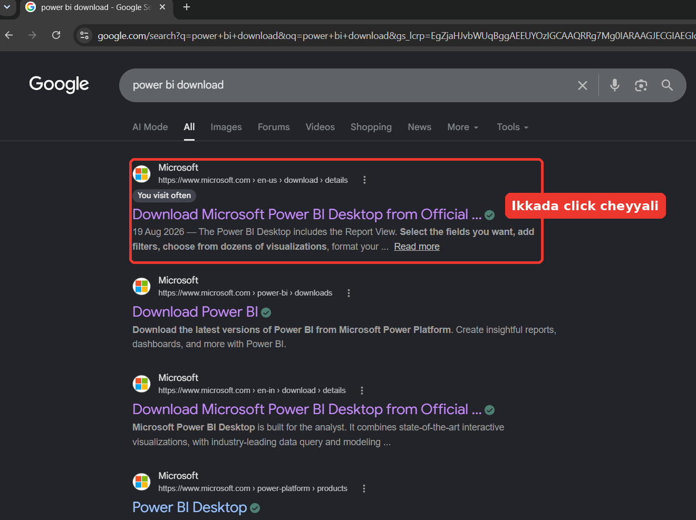
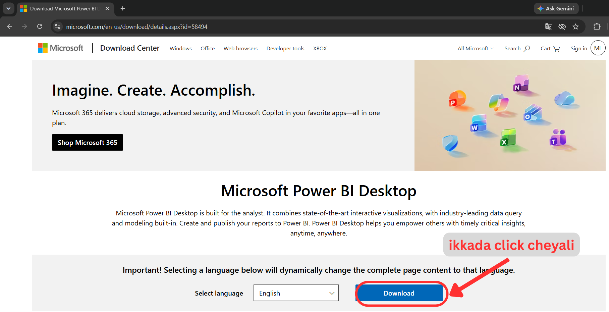
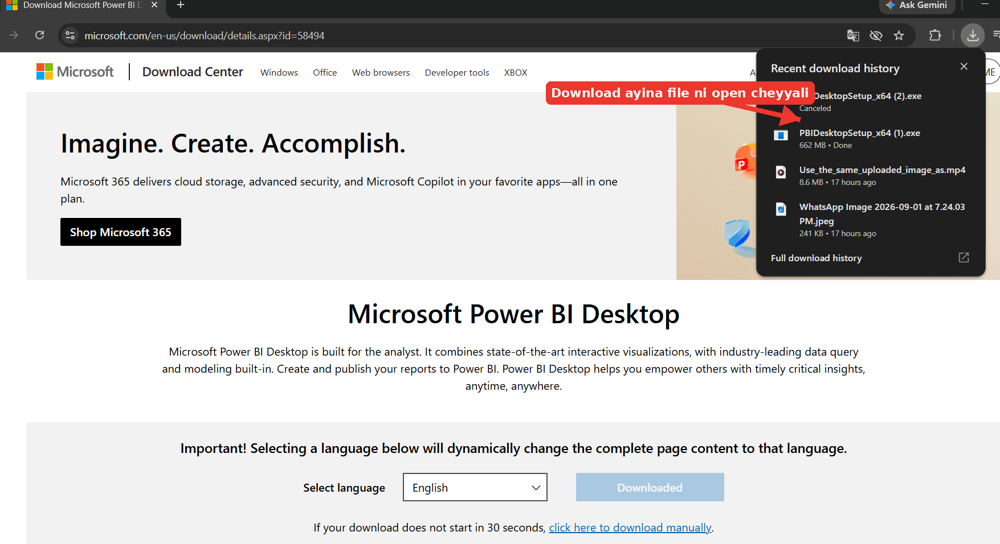
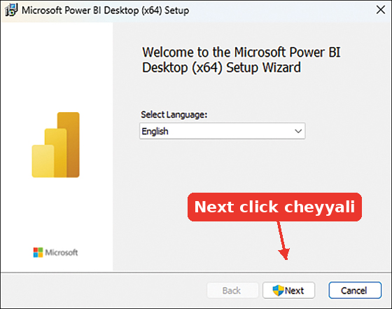
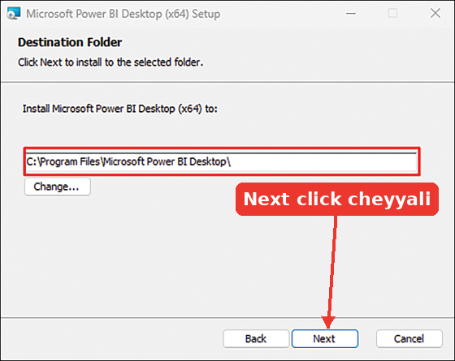
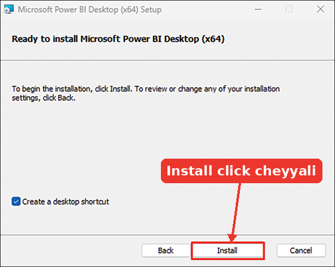
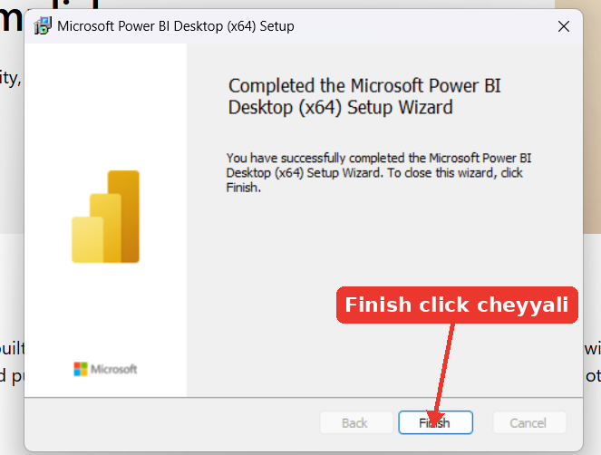

Power BI Desktop – Download & Installation
Power BI ni install cheyyadam chala simple. Step by step ga chuddam.
Microsoft website ki vellali 🌐
First manam Power BI Desktop ni official Microsoft website nunchi download cheskovali. Google lo “power bi download” ani search chesi, Microsoft official result meeda click cheyyali.

- Google lo chala websites vastayi, kani official Microsoft website ne use cheyyali.
- Website microsoft.com domain lo undho check cheskondi.
Power BI Desktop page open avutundi 📊
Microsoft page open ayyaka Power BI Desktop section kanipistundi. Akkada Download button meeda click cheyyali.

Open Official Microsoft Download Page ↗Download ayina file ni open cheyyali 📥
Download complete ayyaka browser downloads lo setup file kanipistundi. Aa file meeda double-click chesi setup ni open cheyyali.

Setup wizard lo Next click cheyyali ➡️
Setup window open ayyaka welcome screen kanipistundi. Ikkada Next meeda click cheyyali.

Installation location confirm cheyyali 📁
Next screen lo Power BI install ayye location kanipistundi. Normal ga unna location ni change cheyyalsina avasaram ledu. Next click cheyyali.

Install click cheyyali ⚙️
Ready to install screen vachaka Install meeda click cheyyali. Appudu Power BI Desktop installation start avutundi.

Installation complete → Finish cheyyali ✅
Installation complete ayyaka success message kanipistundi. Finish meeda click cheyyali. Launch option select chesi unte Power BI Desktop automatic ga open avutundi.

Power BI Desktop install aipoyindi. Ippudu mana actual Power BI learning start cheddam! 🚀